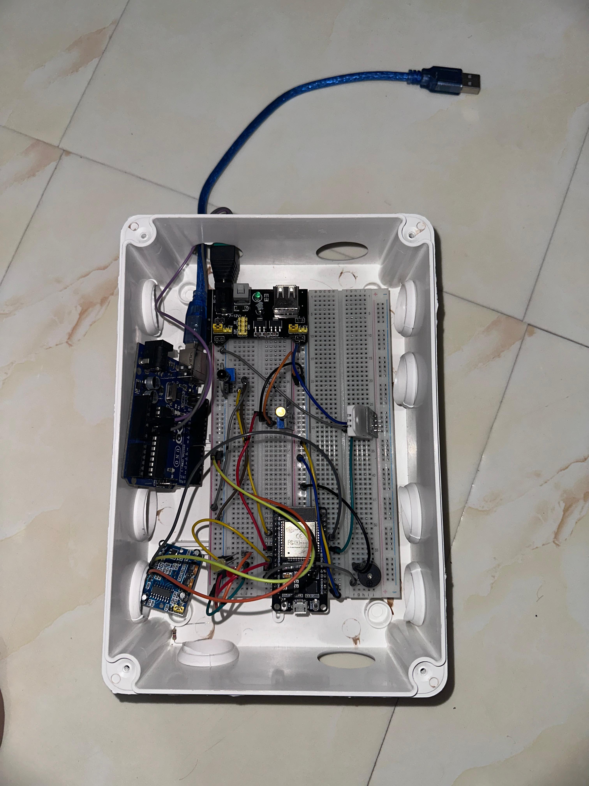
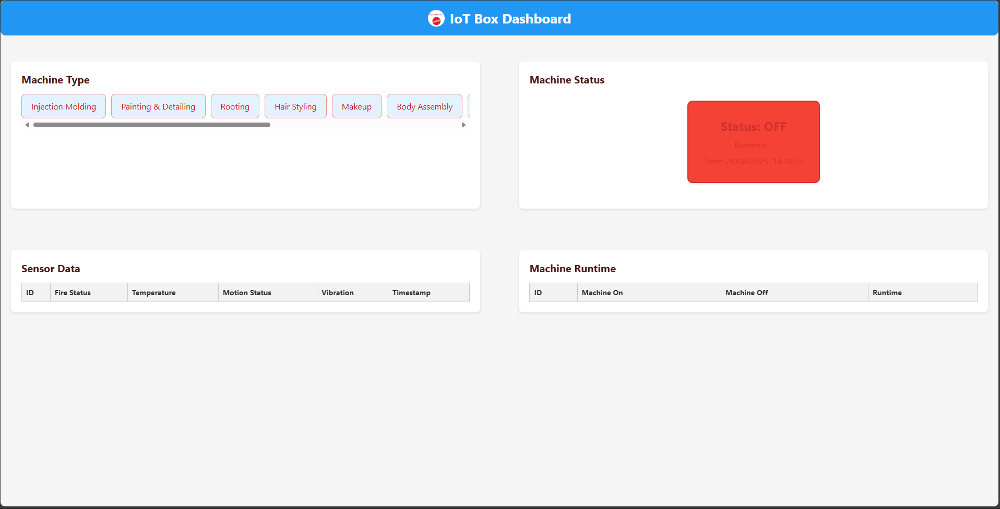
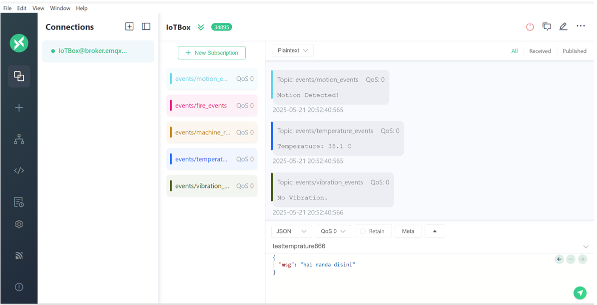

IoT Box Mattel Project



This IoT Box project is an industrial monitoring and automation device that I designed with my team. Using ESP32 as its main brain, this box is capable of reading real-time data from temperature, vibration, and machine status sensors, and sending it to the cloud using the MQTT protocol. This system facilitates data-driven monitoring and decision-making to improve factory operational efficiency and safety.